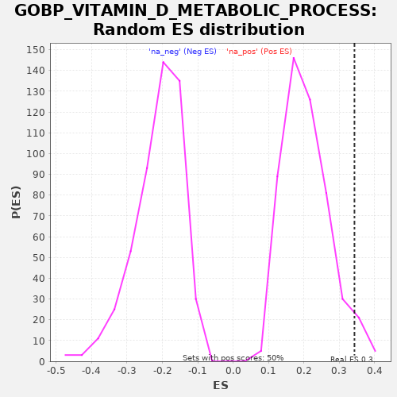

| | | Dataset | A_X_tradeoff |
| Phenotype | NoPhenotypeAvailable |
| Upregulated in class | na_pos |
| GeneSet | GOBP_VITAMIN_D_METABOLIC_PROCESS |
| Enrichment Score (ES) | 0.34306672 |
| Normalized Enrichment Score (NES) | 1.6630805 |
| Nominal p-value | 0.03976143 |
| FDR q-value | 0.618218 |
| FWER p-Value | 1.0 |
Table: GSEA Results Summary
 Fig 1: Enrichment plot: GOBP_VITAMIN_D_METABOLIC_PROCESS
Fig 1: Enrichment plot: GOBP_VITAMIN_D_METABOLIC_PROCESS
Profile of the Running ES Score & Positions of GeneSet Members on the Rank Ordered List
| SYMBOL | RANK IN GENE LIST | RANK METRIC SCORE | RUNNING ES | CORE ENRICHMENT | | 1 | PIAS4 | 3217 | -0.019 | -0.1030 | Yes |
| 2 | VDR | 3611 | -0.021 | -0.0607 | Yes |
| 3 | CUBN | 4256 | -0.027 | -0.0314 | Yes |
| 4 | CYP1A1 | 5295 | -0.037 | -0.0223 | Yes |
| 5 | FGF23 | 5323 | -0.037 | 0.0388 | Yes |
| 6 | CYP27A1 | 5623 | -0.040 | 0.0860 | Yes |
| 7 | CYP11A1 | 6142 | -0.047 | 0.1218 | Yes |
| 8 | CYP27B1 | 7244 | -0.062 | 0.1277 | Yes |
| 9 | LRP2 | 7345 | -0.063 | 0.1850 | Yes |
| 10 | CYP2R1 | 7699 | -0.068 | 0.2294 | Yes |
| 11 | TNF | 8326 | -0.079 | 0.2597 | Yes |
| 12 | SNAI2 | 9977 | -0.109 | 0.2373 | Yes |
| 13 | SNAI1 | 10974 | -0.131 | 0.2485 | Yes |
| 14 | NFKB1 | 11346 | -0.140 | 0.2919 | Yes |
| 15 | LGMN | 11568 | -0.146 | 0.3431 | Yes |
| 16 | GFI1 | 16585 | -0.340 | 0.1475 | No |
Table: GSEA details [plain text format]

Fig 2: GOBP_VITAMIN_D_METABOLIC_PROCESS: Random ES distribution
Gene set null distribution of ES for GOBP_VITAMIN_D_METABOLIC_PROCESS